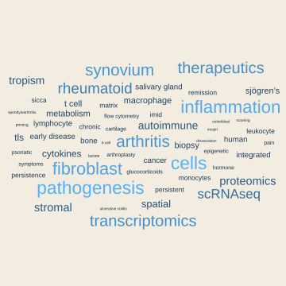

Postdoctoral research fellow and deputy research team lead

MSc Year 4 Systemic autoimmunity and therapy — Module co-lead
BSc Year 3 Immunity and inflammatory disease — Lecturer
Carpentries R instructor
Lecturer in high-throughput technologies and discovery science
BSc(Hons) in Biological Sciences — University of Plymouth
2012-Current day — Filer lab, University of Birmingham
R for applied bioinformatics
Transcriptomics — particularly scRNAseq
Supervision — PhD, MSc, Undergraduate
Microscopy — confocal, wide field, brightfield
Flow cytometry and cell sorting
Peer review
Considered photography
(Emergent) Narratives
Data perception
In stuff